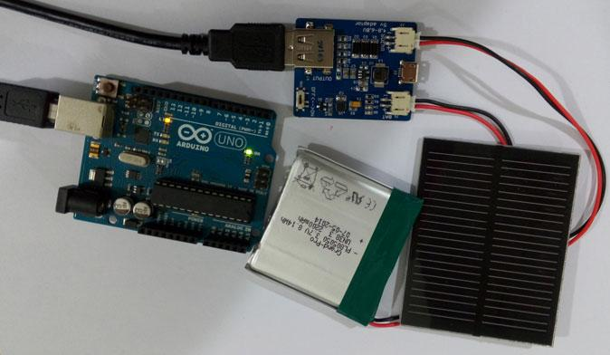
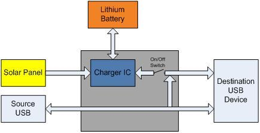
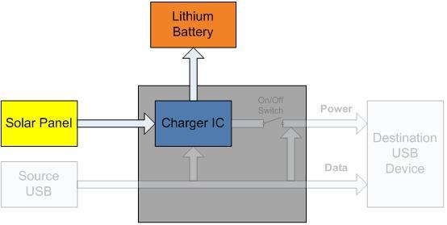
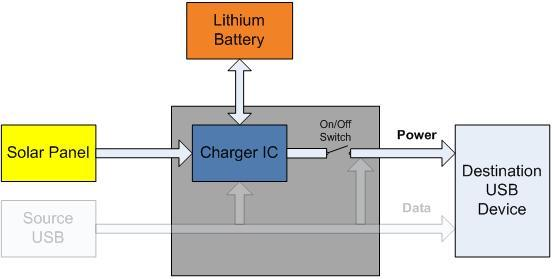
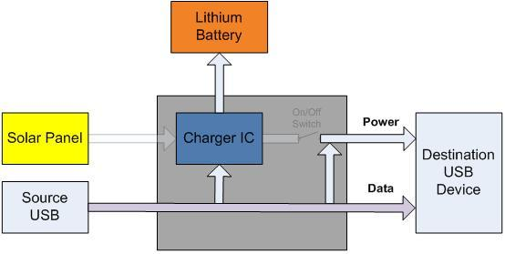
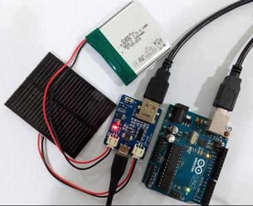

Power your favourite electronic kit with green energy! The Lipo Rider board allows you ride the solar wave to run your favourite 5V device. The Lipo Rider board is the ideal green power solution for your outdoor sensor design. Attach the Lipo Rider board to your sensor board and it can run on solar power forever!
The LipoRider is extremely affordable and easy to use. No programming is required. Plug it in and it works. The internal charger IC handles all the power flow between the various components.
In case solar power is not sufficient, the microUSB port allows you to charge your lithium battery through USB. It can also be used to program your kit without detaching the Lipo Rider board.
The Lipo Rider can be purchased as a separate board or as a kit (Lipo Rider + Lithium Battery + Solar Panel) from Seeed Studio.


| Items | Min | Norm | Max |
|---|---|---|---|
| Iin Solar | 4.8V | 5.0V | 6.0V |
| Icharge (RIset=2.0kΩ) | 700mA | 800mA | 900mA |
| Isupply | 0mA | 600mA | |
| Vbatt(Rx=0Ω) | 4.2V | ||
| Vsource USB | 5.0V | ||
| Vdestination USB | 5.0V | ||
| CH pin level(Red LED state) | OK pin level(Green LED state) | Statements |
|---|---|---|
| low level(on) | high level(off) | Charging |
| high level(off) | low level(last on) | Complete |
| pulse signal(flash) | pulse signal(on) | The battery isn't exist |
| high level(off) | high level(off) | Two situations :
|
Solar Panel
The solar panel is connectedto the board via the lower JST connector. Please note that the Solar Charger IC only accepts input voltage inside the 4.8-6.0V range. If the charging LED is not on, it is possibly due to:
In the second case, re-position your solar panel to accept more sunlight if possible. None of the above conditions will prevent the Lipo Rider from providing a steady 5V supply to the USB, unless the battery is flat.
Solar Panel Equations
Solar Panel Output Power = Output current × Supply Voltage
e.g. 1W = Iout× 5V
Iout = 200mA
Therefore, charging for 1 hour will give 200mAh, ignoring losses. For a 1000mAH battery, charging from empty to full will take approximately 5 hours under ideal conditions.
Lithium Battery
The name Lipo Rider suggest that a Lithium Polymer to be used. However, the chemistry of a lithium polymer and a lithium ion battery is sufficient similar for the two battery types to be interchangeably used. In case more than one battery is to be used, connect them in parallel instead of in series, as the charger IC supplies 4.2V.
Slide switch
The slide switch controls the source of the USB 5V power. ON – Charge enabled from lithium battery and/or solar OFF – Charge disabled from lithium battery and/or solar
Source USB Port
The source USB port is a micro-USB port which is used as a normal USB port. The source USB port can be used to charge the lithium battery or connected to destination device via the destination USB port.
Destination USB port
The destination USB port is where the destination device is to be connected. Power to the destination device will be supplied by the Lipo Rider board. The supply will be either from solar panel, lithium battery or source USB port.
Due to the huge number of combinations, I have only included only the main scenarios:
Standalone Mode
Solar Power charges lithium battery

USB Mode
Solar Power charges lithium battery. Lithium battery supplies destination USB device

Program Mode
Source USB will charge lithium battery and power destination USB device. Data connection will be enabled between source and destination USB devices

One important application of the Lipo Rider board is as an affordable power supply for outdoor sensors. The outdoor sensor device will be powered by the lithium battery supplemented by the solar panel. Please note that it is not recommended to run the outdoor sensor ONLY on solar power, as this may vary during the day and may cause the sensor to reset / power down unexpectedly. In this case, the device is running in “USB Mode”.
If a firmware reprogram for the outdoor sensor device is required, simple connect the micro USB port to your PC which will put the device under “Program Mode” as explained above.
Larger/multiple batteries and/or solar panels can be used, but only with end-user modifications.

Lipo Rider powering an Arduino Duemilanove (not strict an outdoor sensor in this case as I have not connected any sensor and it is not outdoor, but you get the point )